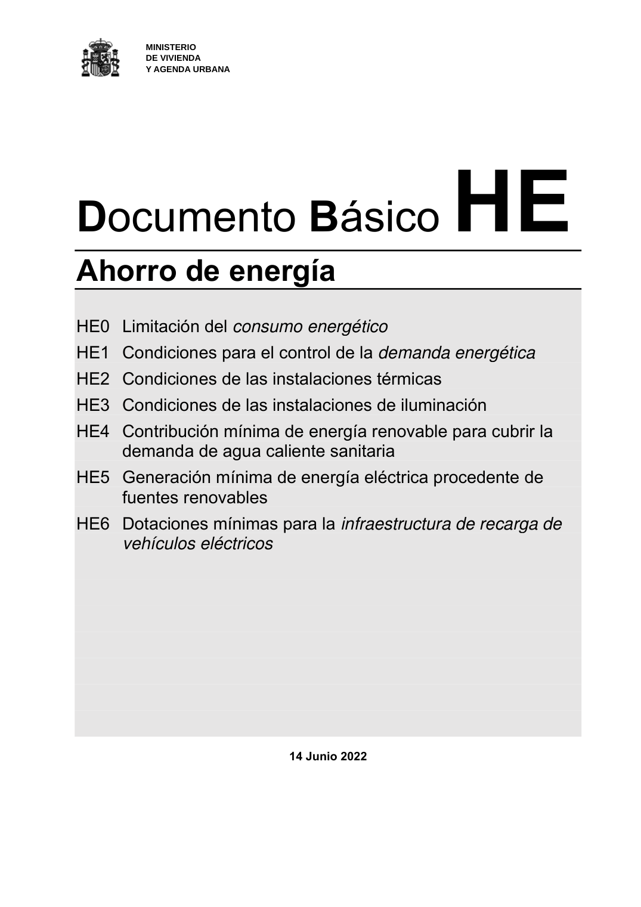

DB-HE · Página 1 · versión 2022-06-14
SHA256: 7f890bd495552e979f83f72c5f5c7b642e745911a8e343a7b5b73023ce0e1f05 · página física 1 de 56 · métodos de encabezado
solo si están cotejados.
Formatos: Markdown · JSON de bloques · PDF p. 1 · imagen PNG
MINISTERIO DE VIVIENDA Y AGENDA URBANA Documento Básico HE Ahorro de energía HE0 Limitación del consumo energético HE1 Condiciones para el control de la demanda energética HE2 Condiciones de las instalaciones térmicas HE3 Condiciones de las instalaciones de iluminación HE4 Contribución mínima de energía renovable para cubrir la demanda de agua caliente sanitaria HE5 Generación mínima de energía eléctrica procedente de fuentes renovables HE6 Dotaciones mínimas para la infraestructura de recarga de vehículos eléctricos 14 Junio 2022
